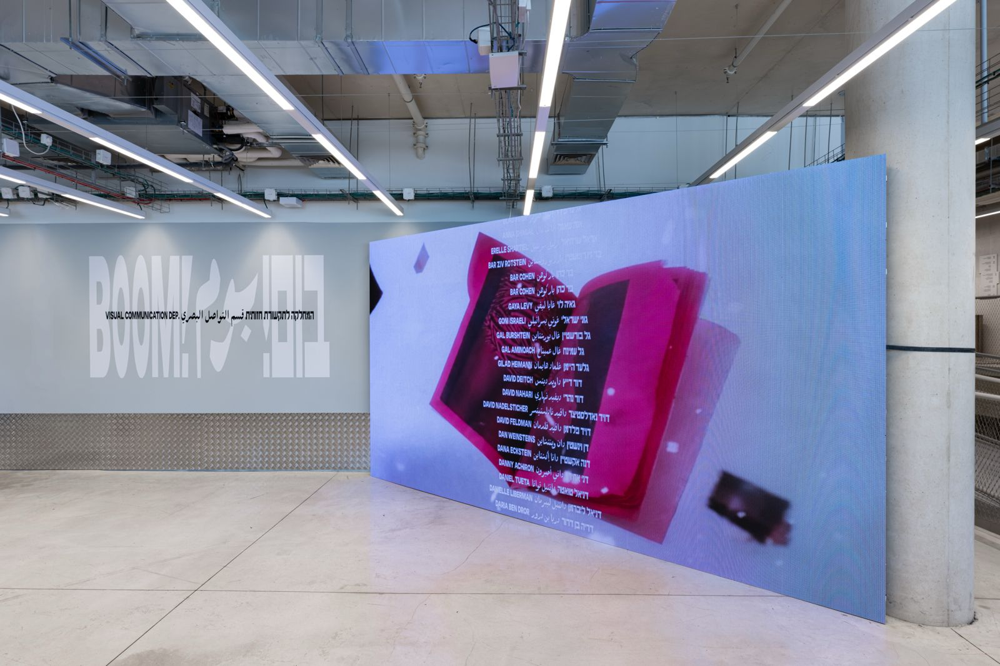
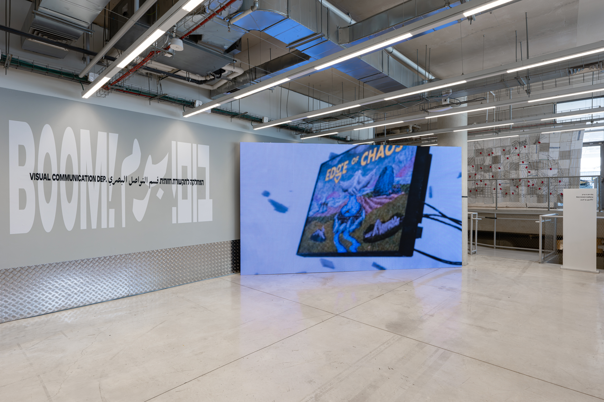
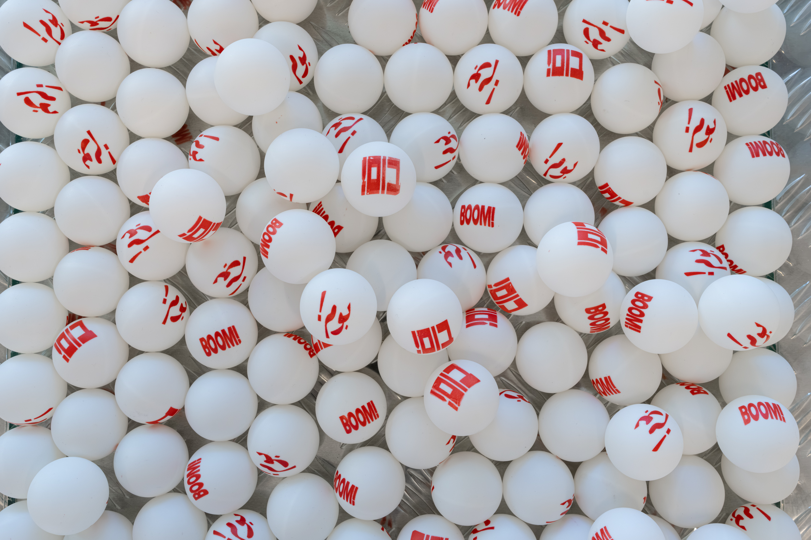
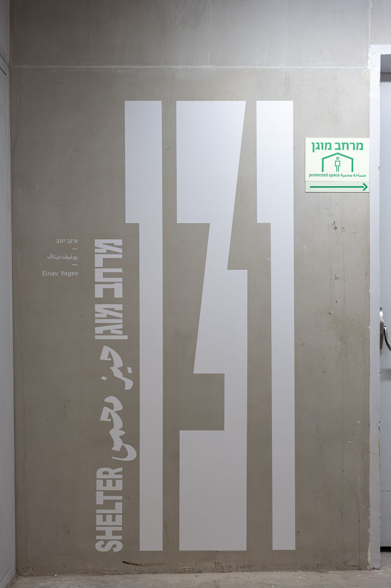
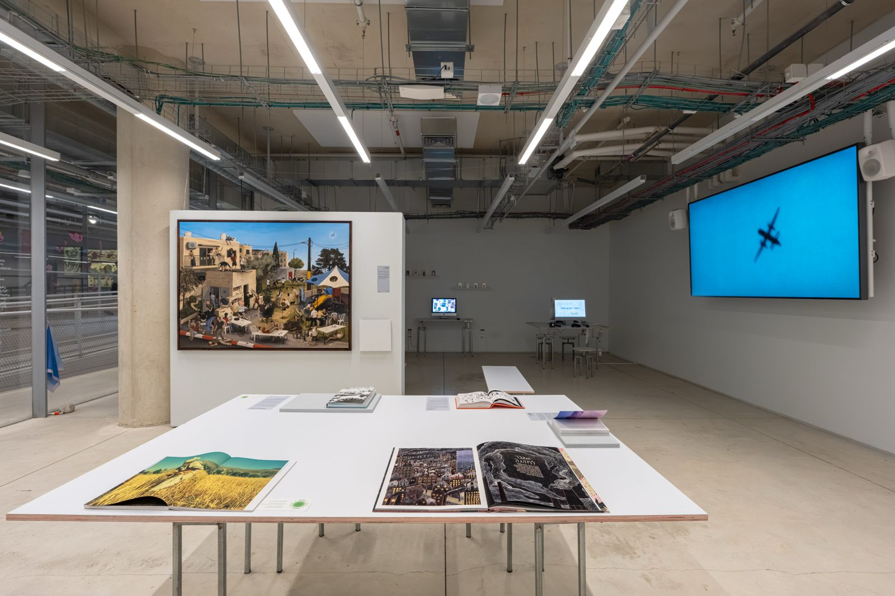
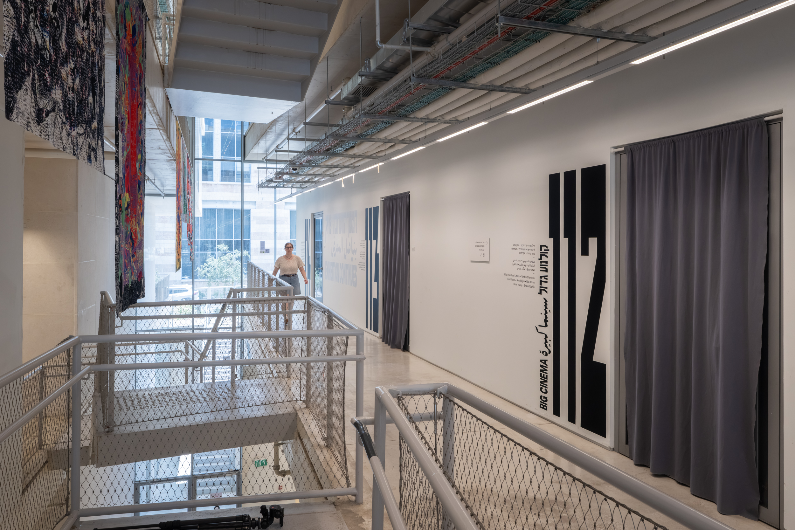
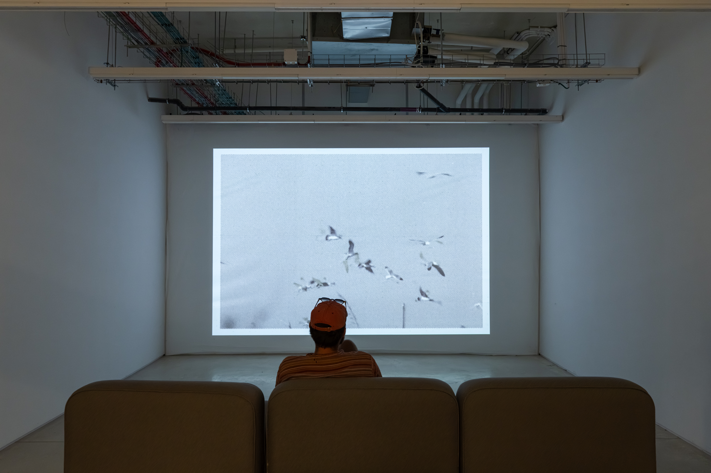
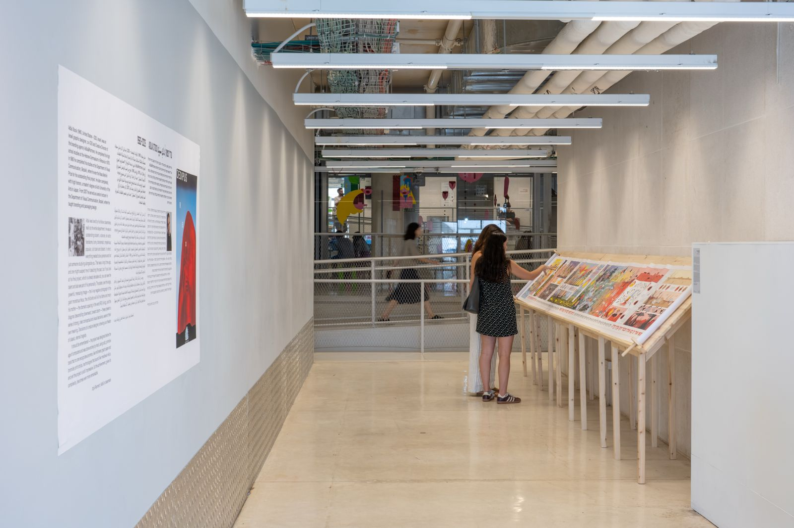
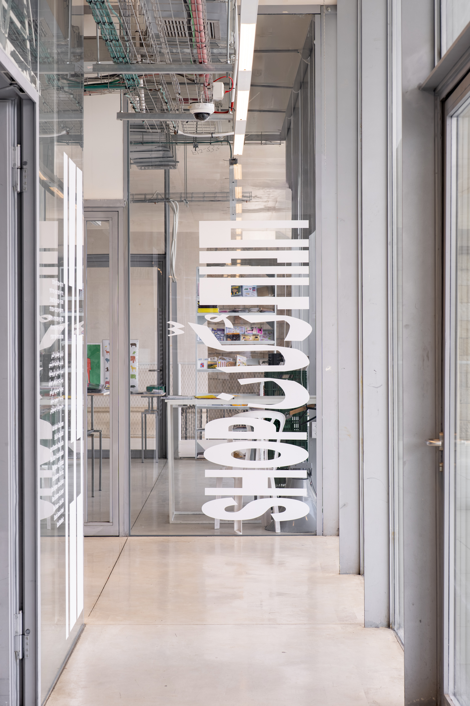

Table of Projects
- [ 1 ] Bezalel Graduation Exhibition
- [ 2 ] Brutality, Revival and Her Name Is Miar
- [ 3 ] Jericho First
- [ 4 ] SUM Chocolad
- [ 5 ] Barricades
- [ 6 ] A butcher and his two sisters
- [ 7 ] Gerbille seeks socks
- [ 8 ] Sarah Shara
Jerusalem based visual communicator. I aim
to design through exploration, experimentation and curiosity. Drawn to print, typography and color. I’m interested in how content takes shape and meaning through visual decisions.








